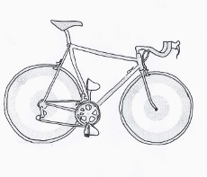
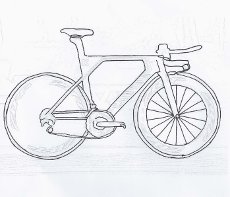
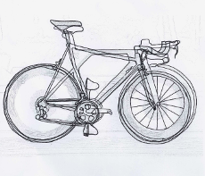

erste Etappe: Düsseldorf - Düsseldorf
Düsseldorf 2017 / Berlin 1987
davor
Das amüsanteste an der Team Präsentation war wohl, als Jens Voigt bereits von zwei Fahrern darauf aufmerksam gemacht wurde das sie nicht Arno Demare sind, dann den Dritten interview und dieser immer noch der war den er eigentlich sprechen wollte.
Links sieht man zum einen das Fahrrad mit dem Jelle Neijdam 1987 in Berlin den Prolog gewann und das Fahrrad mit dem Toni Martin morgen gewinnen möchte. Dreisig Jahre liegen dazwischen.
ein Tip
Stephan Küng - BMC (CH)